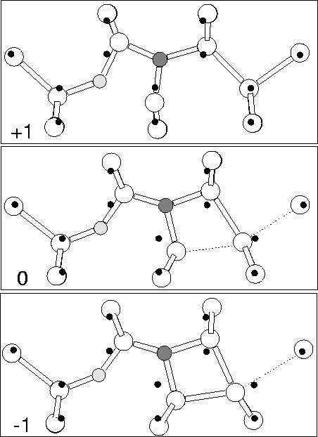
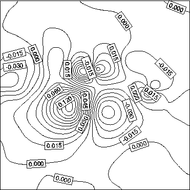
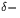
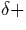

Wagner et al [174] have reported two weak LVMs at 810 and
1018 cm-1 (813 and 1020 cm-1 at room temperature
[100]) which were seen in the same materials as the NNO
defects. These were also reproduced in experiments by Berg Rasmussen
et al [103] in implanted Si after annealing at
600 C. These modes are correlated, and disappear after
annealing at 650
C. These modes are correlated, and disappear after
annealing at 650 C. Long time annealing at 600
C. Long time annealing at 600 C
increases their concentration at the expense of N2 modes and the O
defect responsible for the 1012 cm-1 mode, suggesting that oxygen
and nitrogen complexes are breaking up while this defect is forming.
They are always of a much weaker intensity than the NNO vibrational
modes. These modes have not to our knowledge ever been properly
characterised, and their origin is unknown.
C
increases their concentration at the expense of N2 modes and the O
defect responsible for the 1012 cm-1 mode, suggesting that oxygen
and nitrogen complexes are breaking up while this defect is forming.
They are always of a much weaker intensity than the NNO vibrational
modes. These modes have not to our knowledge ever been properly
characterised, and their origin is unknown.
After high temperature pre-annealing even the N2 pairs are broken up, and it seems reasonable that in material with a high Oi concentration, some of the Ni could diffuse to Oi before reaching a second Ni and reforming a pair. This NiOi would form as an intermediate structure between Ni and either NiO2i or N2iOi, and is a possible source of the 810 and 1018 cm-1 vibrational modes (there are other alternatives, see below). If this is the source of the modes it would be important since it shows clear evidence of a N-O precursor to the NiO2i defect, and adds much support to the claim that the NiO2i shallow thermal donor can form in silicon (see Chapter 8).
We examined Ni-Oi using the 149 atom cluster
Si79H68NO. In the neutral charge state the defect has
roughly planar C1h symmetry with a deep donor level close to that
of isolated Ni (see Figure 8.2). This eliminates it
as a model for the shallow thermal donor. The N atom moves very
slightly out of plane by 0.156 Å which allows its lone pair to
become more assymetric, similar to the nitrogen coordination in
ammonia, NH3. This is discussed further below. The O atom sits in
a stable bond-centred location with Si-O lengths of 1.639 and
1.665 Å with the shorter bond on the Si shared with the N, and a
Si-O-Si bond angle of 146 (see Figure 7.5). The N-Si
bonds are 1.680, 1.834 and 1.832 Å, with the shorter bond once more
shared with the Si bonded to the oxygen.
(see Figure 7.5). The N-Si
bonds are 1.680, 1.834 and 1.832 Å, with the shorter bond once more
shared with the Si bonded to the oxygen.
|  |
|  |
The deep donor level is concentrated on a  110
110 p-
type orbital located on the central Si atom. This atom moves away
from the O. The asymmetry of the defect allows the donor wavefunction
to concentrate on the lobe of the p-type orbital furthest from the
oxygen, thus minimising the Coulombic repulsion with O. This explains
why the donor level remains deep in the gap. A plot of the Kohn-Sham
wavefunction for this level is given in Figure 7.7.
This electronic behaviour is discussed further in
Section 8.10.
p-
type orbital located on the central Si atom. This atom moves away
from the O. The asymmetry of the defect allows the donor wavefunction
to concentrate on the lobe of the p-type orbital furthest from the
oxygen, thus minimising the Coulombic repulsion with O. This explains
why the donor level remains deep in the gap. A plot of the Kohn-Sham
wavefunction for this level is given in Figure 7.7.
This electronic behaviour is discussed further in
Section 8.10.
Since the defect possesses such a deep level it raises the possibility that it could act as an acceptor, trapping an additional electron to fully populate this level. The implantation used to add isotopic N/O creates radiation defects, pinning the fermi-level near to midgap. Both the isotope implanted and as-grown material were n-type[100] with no difference in modes, which suggests the defects possessed the same charge state in both. This suggests that the defects would be negatively charged. We therefore calculated the structure and vibrational modes of the defect in both the neutral and negative charge states.
In the -1 charge state the core Si atom starts to form a bond with its
Si next neighbour on the opposite side to the oxygen; this bond
shortens to 2.35 Å, dilating the Si-Si back bond to 3.16 Å (see
Figure 7.5). Thus the lone pair on the core Si appears to
have migrated out of the defect core and onto a next neighbour Si atom
of the defect. There is little change in the Si-O-Si lengths (1.63
and 1.65 Å, 153 bond angle), however the N-Si lengths dilate
as the core Si is pulled away from the N, the new lengths being 1.66,
1.86 and 1.93 Å.
bond angle), however the N-Si lengths dilate
as the core Si is pulled away from the N, the new lengths being 1.66,
1.86 and 1.93 Å.
The change in bonding with charge state is shown in
Figure 7.6, and shows an interesting effect. In the
+1 charge state the core p-type orbital is empty and thus there is
an attraction between it and the O atom. It therefore
shifts off site towards the oxygen. However in the neutral charge
state this orbital is occupied and so there is now a driving force to
form a covalent bond with its Si next-neighbour on the other side.
Since this Si atom is fully coordinated already then it has to choose
between bonding to the core Si and bonding to its standard neighbour
along  110
110 . In practise it appears to form an extended
bond between the two with roughly equal bond lengths (see
Figure 7.5). Finally in the -1 charge state there are now
sufficient electrons to completely fill the dangling p-type bond.
However it is energetically more favourable to form instead a Si-Si
bond with this next neighbour along
. In practise it appears to form an extended
bond between the two with roughly equal bond lengths (see
Figure 7.5). Finally in the -1 charge state there are now
sufficient electrons to completely fill the dangling p-type bond.
However it is energetically more favourable to form instead a Si-Si
bond with this next neighbour along  110
110 , thus creating a
dangling bond on the Si atom further from the defect core. This is
probably since the dangling bond, if it were to stay on the core Si,
would have to sit quite close to the oxygen atom, so the defect can
lower the overall Coulombic repulsion by moving it out of the defect
centre in this way. Whether it would be possible to grow this defect
in p-type material and observe the shifted +1 behaviour is an open
question.
, thus creating a
dangling bond on the Si atom further from the defect core. This is
probably since the dangling bond, if it were to stay on the core Si,
would have to sit quite close to the oxygen atom, so the defect can
lower the overall Coulombic repulsion by moving it out of the defect
centre in this way. Whether it would be possible to grow this defect
in p-type material and observe the shifted +1 behaviour is an open
question.
The vibrational modes are given in Table 7.2. As can be seen, there is extremely good agreement between the calculated and experimental values. The change in charge state has only a small effect on the modes. The modes for the -1 charge state are slightly better than the neutral result and add weight to the suggestion that the defect is negatively charged, however there is not sufficient difference to allow us to distinguish the defect charge state purely on this basis. The experimental resolution was 6 cm-1 and most of the isotopic shifts lie well within this accuracy. The 805 cm-1 mode appears experimentally as a shoulder to the stronger 813 cm-1 mode due to NNO, and as this barely shifts with O isotope it could mask any movement in the 805 cm-1 mode.
Both the N and O atoms have one very short Si bond with their mutually
shared Si atom. This is extremely similar to the oxygen pair (see
Chapter 6), where the two oxygen atoms bind tightly to
their shared Si atom. This is due to the large electronegativities of
both the oxygen and nitrogen atom, which draw charge from their Si
neighbours, making the shared Si atom strongly . However the
binding for the NiOi defect will be much stronger than that of
the oxygen dimer, since as well as this electrostatic bonding there is
the additional binding due to strain compensation with is absent in
the dimer. This is in agreement with their dissociation temperatures;
oxygen dimers are not important in TD formation above about
450 C whereas the NiOi modes anneal out at 650
C whereas the NiOi modes anneal out at 650 C.
C.
We originally relaxed this defect with the N atom starting exactly in-plane, but this is a metastable minimum. Allowing the N extremely small out-of-plane relaxation allows the wavefunction of its lone pair to distribute correctly. Without this the N does not attract as much surrounding charge, decreasing the polarisation of the surrounding lattice and so weakening the strong shared bonds with the neighbouring Si in the N-Si-O chain. This then shifts their vibrational modes, leading to an incorrect ordering of the N and O modes. These earlier modes are included in Table 7.2 for reference.
Note that these results for NiOi differ to those given in earlier work performed using semi-empirical PM3 clusters[180], where it was suggested that NiOi represented a single, rather shallow, EMT donor.
| Defect | Source | ||||
| 14N | 15N | ||||
| Ni | Experiment [170,181] | 690 | 17 | ||
| Theory [145] | 700 | 17 | |||
| 582 | 15 | ||||
| 14N16O | 15N16O | 14N17O | 14N18O | ||
| NiOi | Experiment [100,174] | 1020 | 8 | 9 | |
| 813 | 18 | ||||
| This work | |||||
| -1 | 1014 | 3 | 20 | 37 | |
| 875 | 20 | 5 | 11 | ||
| 745 | 14 | 28 | |||
| Neutral | 992 | 2 | 21 | 39 | |
| 850 | 21 | 3 | 8 | ||
| 694 | 12 | 23 | |||
| Local Minimum | 954 | 25 | |||
| (see Section 7.5) | 828 | 20 | 38 | ||
| 625 | 15 | ||||
| N2iO2i | 14N14N | 16O16O | 16O18O | 18O16O | 18O18O |
| This work | 1142 | ||||
| 1100 | 26 | 13 | 42 | ||
| 963 | |||||
| 868 | 17 | 23 | 37 | ||
| 767 | 1 | 2 | |||
| 741 | |||||
| 629 | 2 | 3 | |||
| 591 | 12 | 3 | 17 | ||
| 16O16O | 14N14N | 14N15N | 15N14N | 15N15N | |
| 1142 | 1 | 31 | 32 | ||
| 1100 | 1 | 1 | |||
| 963 | 26 | 1 | 28 | ||
| 868 | 1 | 1 | |||
| 767 | 17 | 18 | |||
| 741 | 17 | 17 |